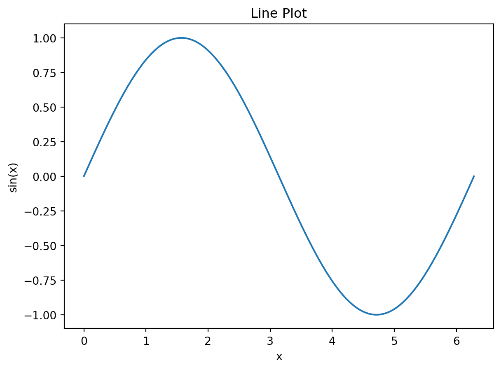
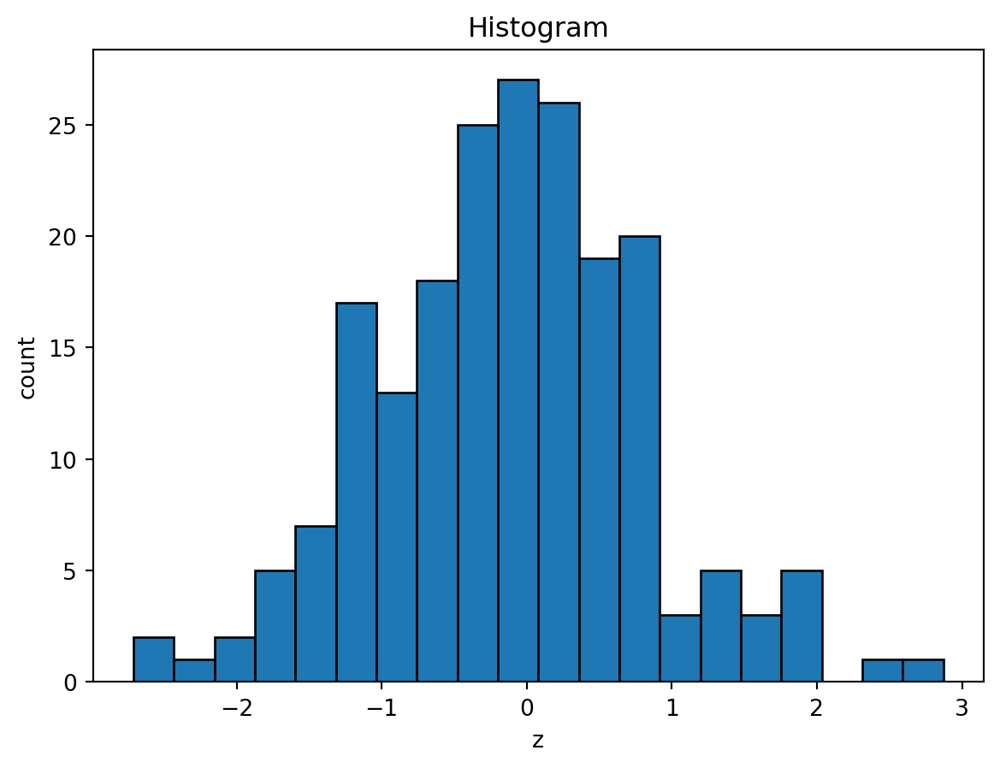

x = 10
x10sklearnThis note introduces only the Python syntax needed for the rest of these notes. The goal is not to cover Python as a full programming language. The goal is to make code using numpy, matplotlib, and sklearn readable.
The intended reader already knows R. Many ideas are the same: objects have names, functions take arguments, vectors and matrices are central, and modeling workflows usually follow a fit-then-predict pattern.
A Python code chunk looks like this:
x = 10
x10Assignment uses =.
a = 2
b = 3
a + b5Python comments start with #.
# This is a comment.
x = 5Unlike R, Python uses zero-based indexing. The first element has index 0.
values = [10, 20, 30]
values[0]10Python packages are loaded with import.
The usual imports in these notes are:
import numpy as np
import pandas as pd
import matplotlib.pyplot as pltThis means:
numpy is used as np;pandas is used as pd;matplotlib.pyplot is used as plt.Specific functions or classes can be imported from a package:
from sklearn.linear_model import LinearRegression
from sklearn.model_selection import train_test_splitThis is similar in spirit to loading a function from an R package, but Python usually names the module path explicitly.
Python has several basic data types.
x = 3 # integer
y = 2.5 # float
name = "tree" # string
flag = True # BooleanUse type() to check the type of an object.
type(y)floatPython is case-sensitive. x and X are different objects.
A list is an ordered collection of objects.
features = ["age", "income", "education"]
features['age', 'income', 'education']Lists can contain objects of different types, although in data analysis we usually keep them simple.
mixed = [1, "a", True]
mixed[1, 'a', True]Indexing starts at 0.
features[0]'age'Use negative indexing to count from the end.
features[-1]'education'Slicing uses start:stop, where stop is not included.
features[0:2]['age', 'income']This returns the first two elements.
Some common list operations are:
features.append("gender")
len(features)4Lists are often used to specify columns or hyperparameter grids.
num_features = ["age", "chol", "thalach"]
k_values = [1, 3, 5, 10]A dictionary stores key-value pairs. It is similar to a named list in R.
params = {
"n_neighbors": 5,
"weights": "uniform",
}
params{'n_neighbors': 5, 'weights': 'uniform'}Access a value by its key:
params["n_neighbors"]5Dictionaries are used frequently in sklearn, especially for parameter grids.
param_grid = {
"max_depth": [2, 3, 4],
"min_samples_leaf": [1, 5, 10],
}For pipelines, parameter names often use two underscores:
param_grid = {
"model__C": [0.1, 1, 10],
}This means the parameter C inside the pipeline step named "model".
Python functions are called with parentheses.
round(3.14159, 2)3.14Named arguments use name=value.
np.linspace(0, 1, num=5)array([0. , 0.25, 0.5 , 0.75, 1. ])Many sklearn objects are created by calling a class with arguments:
model = LinearRegression()
modelLinearRegression()In a Jupyter environment, please rerun this cell to show the HTML representation or trust the notebook.
Python uses indentation to mark code blocks. R uses braces {}; Python uses indentation.
For example, a for loop:
for k in [1, 3, 5]:
print(k)1
3
5The indented line belongs to the loop. These notes use loops only when they are helpful for plotting or comparing models.
numpy.arrayThe most important data structure for numerical computation is numpy.array.
import numpy as np
x = np.array([1, 2, 3, 4])
xarray([1, 2, 3, 4])An array has a shape.
x.shape(4,)For this object, the shape is (4,). This means it is a one-dimensional array with 4 elements.
A one-dimensional array behaves like a vector.
x = np.array([10, 20, 30])
x.ndim1x.shape(3,)Indexing is zero-based.
x[0]np.int64(10)Vectorized arithmetic works similarly to R.
x + 1array([11, 21, 31])x * 2array([20, 40, 60])np.mean(x)np.float64(20.0)A two-dimensional array is like a matrix.
X = np.array(
[
[1, 2],
[3, 4],
[5, 6],
]
)
Xarray([[1, 2],
[3, 4],
[5, 6]])Check the dimension and shape.
X.ndim2X.shape(3, 2)The shape is (3, 2), meaning 3 rows and 2 columns.
Indexing uses [row, column].
X[0, 1]np.int64(2)This is the entry in row 0 and column 1.
Select a column:
X[:, 0]array([1, 3, 5])Select a row:
X[1, :]array([3, 4])The colon : means “all indices” in that direction.
sklearnThe most common Python issue in sklearn is array dimension.
In sklearn, the predictor matrix X should be two-dimensional:
\[ X:\quad n\times p. \]
The response vector y should usually be one-dimensional:
\[ y:\quad n. \]
This means:
X = np.array(
[
[1.0],
[2.0],
[3.0],
[4.0],
]
)
y = np.array([1.2, 1.9, 3.1, 3.8])
X.shape, y.shape((4, 1), (4,))Here X has shape (4, 1), not (4,).
(n, 1) MattersSuppose we have one predictor.
x = np.array([1.0, 2.0, 3.0, 4.0])
x.shape(4,)This has shape (4,), so sklearn treats it as a one-dimensional object, not as a predictor matrix.
Use .reshape(-1, 1) to convert it to a matrix with one column.
X = x.reshape(-1, 1)
X.shape(4, 1)The -1 means “infer this dimension from the data.” In this case, Python infers 4 rows.
This pattern appears often in the notes:
test_x = np.linspace(0, 1, 101).reshape(-1, 1)
test_x.shape(101, 1)Sometimes we want a one-dimensional array for plotting.
X[:, 0]array([1., 2., 3., 4.])or
X.reshape(-1)array([1., 2., 3., 4.])Both produce a one-dimensional array.
Lists are general containers. Arrays are numerical objects.
[1, 2, 3] + [4, 5, 6][1, 2, 3, 4, 5, 6]List addition concatenates.
np.array([1, 2, 3]) + np.array([4, 5, 6])array([5, 7, 9])Array addition is elementwise.
For modeling and numerical work, use arrays or pandas data frames, not plain lists.
These notes often use numpy random number generators for simulation.
rng = np.random.default_rng(1)
x = rng.normal(size=5)
xarray([ 0.34558419, 0.82161814, 0.33043708, -1.30315723, 0.90535587])The number 1 is a seed. It makes the random output reproducible.
Some common random functions are:
rng.normal(loc=0, scale=1, size=5)array([ 0.44637457, -0.53695324, 0.5811181 , 0.3645724 , 0.2941325 ])rng.uniform(0, 1, size=5)array([0.75351311, 0.53814331, 0.32973172, 0.7884287 , 0.30319483])For a two-dimensional predictor matrix:
X = rng.normal(size=(10, 3))
X.shape(10, 3)sklearn WorkflowMost sklearn models use the same workflow.
.fit(X_train, y_train)..predict(X_test)..predict_proba(X_test).Example:
from sklearn.model_selection import train_test_split
from sklearn.neighbors import KNeighborsClassifier
from sklearn.datasets import load_iris
iris = load_iris()
X = iris.data
y = iris.target
X_train, X_test, y_train, y_test = train_test_split(
X,
y,
test_size=0.3,
random_state=1,
stratify=y,
)
model = KNeighborsClassifier(n_neighbors=5)
model.fit(X_train, y_train)
pred = model.predict(X_test)
prob = model.predict_proba(X_test)
pred[:5]array([2, 0, 0, 1, 1])Here:
X_train and X_test are two-dimensional arrays;y_train and y_test are one-dimensional arrays;pred contains predicted class labels;prob contains predicted class probabilities.Check shapes:
X_train.shape, y_train.shape, pred.shape, prob.shape((105, 4), (105,), (45,), (45, 3))train_test_split is the standard way to create training and test sets.
from sklearn.model_selection import train_test_split
X_train, X_test, y_train, y_test = train_test_split(
X,
y,
test_size=0.3,
random_state=1,
)For classification, use stratify=y to preserve class proportions.
X_train, X_test, y_train, y_test = train_test_split(
X,
y,
test_size=0.3,
random_state=1,
stratify=y,
)This is similar to making a random split in R, but the function returns all four objects at once.
A pipeline chains preprocessing and modeling steps.
from sklearn.pipeline import Pipeline
from sklearn.preprocessing import StandardScaler
from sklearn.linear_model import LogisticRegression
pipe = Pipeline(
steps=[
("scaler", StandardScaler()),
("model", LogisticRegression(max_iter=1000)),
]
)
pipe.fit(X_train, y_train)
pipe.predict(X_test)array([2, 0, 0, 1, 1, 1, 2, 1, 2, 0, 0, 2, 0, 1, 0, 1, 2, 1, 1, 2, 2, 0,
1, 2, 1, 1, 1, 2, 0, 2, 0, 0, 1, 1, 2, 2, 0, 0, 0, 1, 2, 2, 1, 0,
0])Each step is a pair:
("step_name", object)Pipeline parameters use two underscores.
pipe.get_params()["model__max_iter"]1000Cross-validation evaluates a model over several train-validation splits.
from sklearn.model_selection import cross_val_score
scores = cross_val_score(
pipe,
X,
y,
cv=5,
scoring="accuracy",
)
scoresarray([0.96666667, 1. , 0.93333333, 0.9 , 1. ])The mean score is:
scores.mean()np.float64(0.9600000000000002)Grid search tries several hyperparameter values.
from sklearn.model_selection import GridSearchCV
param_grid = {
"model__C": [0.1, 1, 10],
}
grid = GridSearchCV(
pipe,
param_grid=param_grid,
cv=5,
scoring="accuracy",
)
grid.fit(X, y)
grid.best_params_{'model__C': 10}The best fitted model is:
grid.best_estimator_Pipeline(steps=[('scaler', StandardScaler()),
('model', LogisticRegression(C=10, max_iter=1000))])In a Jupyter environment, please rerun this cell to show the HTML representation or trust the notebook. matplotlib BasicsThese notes use only basic matplotlib.
The standard import is:
import matplotlib.pyplot as pltx = np.array([1, 2, 3, 4])
y = np.array([1.1, 2.0, 2.8, 4.2])
plt.scatter(x, y)
plt.xlabel("x")
plt.ylabel("y")
plt.title("Scatter Plot")
plt.show()
x_grid = np.linspace(0, 2 * np.pi, 200)
y_grid = np.sin(x_grid)
plt.plot(x_grid, y_grid)
plt.xlabel("x")
plt.ylabel("sin(x)")
plt.title("Line Plot")
plt.show()
rng = np.random.default_rng(1)
x = rng.uniform(0, 2 * np.pi, size=30)
y = np.sin(x) + rng.normal(scale=0.2, size=30)
x_grid = np.linspace(0, 2 * np.pi, 200)
plt.scatter(x, y, facecolors="none", edgecolors="black")
plt.plot(x_grid, np.sin(x_grid), color="C1")
plt.xlabel("x")
plt.ylabel("y")
plt.title("Data and Curve")
plt.show()
This pattern appears often when we plot data points and a fitted curve.
Use plt.subplots for multiple panels.
fig, axs = plt.subplots(1, 2, figsize=(10, 4))
axs[0].scatter(x, y)
axs[0].set_title("scatter")
axs[1].plot(x_grid, np.sin(x_grid))
axs[1].set_title("line")
plt.show()
Notice that when using axes objects, we write ax.set_title() instead of plt.title().
z = rng.normal(size=200)
plt.hist(z, bins=20, edgecolor="black")
plt.xlabel("z")
plt.ylabel("count")
plt.title("Histogram")
plt.show()
XThe most common error is passing a one-dimensional predictor array to sklearn.
Bad:
x = np.array([1, 2, 3, 4])
model.fit(x, y)Good:
X = x.reshape(-1, 1)
model.fit(X, y)In Python, methods need parentheses.
model.fit(X_train, y_train)
model.predict(X_test)Writing model.predict without parentheses refers to the method itself, but does not call it.
Another common mistake is confusing an sklearn class with an object created from that class.
For example, DecisionTreeClassifier is the class itself.
from sklearn.tree import DecisionTreeClassifier
DecisionTreeClassifierTo create a model object, call the class with parentheses.
model = DecisionTreeClassifier()Arguments go inside the parentheses.
model = DecisionTreeClassifier(max_depth=3)
model.fit(X_train, y_train)Do not write:
model = DecisionTreeClassifier
model.fit(X_train, y_train)The first version creates an estimator object. The second version only stores the class itself, so .fit() will not work as intended.
Use arrays for elementwise numerical operations.
np.array([1, 2, 3]) * 2array([2, 4, 6])Plain lists do not always behave like numerical vectors.
For the rest of these notes, the most important Python ideas are:
numpy.array is the basic numerical vector or matrix object;X in sklearn should be two-dimensional;y is usually one-dimensional;.reshape(-1, 1) converts one predictor into a one-column matrix;sklearn models use .fit(), .predict(), and often .predict_proba();matplotlib.pyplot is used for basic scatter plots, line plots, histograms, and subplots.